Introdução
O alojamento temporário de emergência é uma valência do apoio psicossocial em emergência, essencial para proporcionar ao cidadão individual e às famílias um local seguro para permanecerem, antes, durante e após um acidente grave ou catástrofe, onde são igualmente asseguradas as suas necessidades básicas, bem como apoio psicossocial de emergência.
Esse alojamento temporário é designado por Zona de Concentração e Apoio à População (ZCAP) e a aplicação ZCAPNet - Sistema de apoio à Proteção Cívil, foi criada para permitir o levantamento, registo e gestão dos espaços disponíveis antes da sua necessidade e, aquando da ocorrência de um acidente grave ou catástrofe, seja possível a utilização dessa informação para registo do acolhimento e respetivo apoio prestado.
Embora a arquitetura global do sistema seja a de permitir a centralização dos dados num único ponto (servidor), cada aplicação pode ser utilizada e funcionar autonomamente, sem conectividade com a rede, e enviar os dados posteriormente para a unidade central.
Aconselha-se os novos utilizadores do ZCAPNet a ler este manual, visto ser uma aplicação específica para um determinado nicho de mercado, com as suas próprias especificidades.
Como utilizar o manual
Este manual encontra-se organizado de uma forma simples, clara e objetiva, de modo a que o utilizador tire o máximo partido do mesmo. Pretende-se que, após a leitura do manual, consiga perceber todas as funcionalidades do ZCAPNet e os seus objetivos.
Principais características funcionais do ZCAPNet
- Registo e gestão de ZCAPs - Levantamento das características dos espaços disponíveis para acolhimento.
- Registo e gestão de Incidentes - Abertura de ZCAPs durante a ocorrência de um acidente grave ou catástrofe.
- Registo e gestão de Pessoas acolhidas - Acolhimento e tratamento de dados da população acolhida no contexto de um Incidente.
- Funcionamento offline-first - Garantia de operabilidade em contexto de ausência de rede.
- Sincronização - Receção e envio de dados de e para o sistema central para reporte e coordenação.
Outras características:
- Suporte Multi-lingua
- Gestão de utilizadores por perfil e acesso a dados
- Modelação fléxível da árvore hierárquica do sistema
- Modelação flexível dos formulários das ZCAPs (detalhes dos espaços)
- Modelação flexível dos formulários de acolhimento (dados recolhidos, necessidades especiais, tipos de apoio)
ZCAPNet - Sistema de apoio à Proteção Cívil
Entrar no ZCAPNet
O ecrã de entrada da aplicação disponibiliza as opções:
- Ajuda - Acesso ao manual da aplicação.
- Acerca de - Informação sobre o sistema, projeto e autores.
- Dados de acesso - Introduza o nome de utilizador e palavra passe previamente fornecida.
- Idioma - Seleccione o idioma a utilizar.
- Entrar - Validar as credenciais e entrar no sistema.
Para aceder às restantes funcionalidades, introduza o nome de utilizador e palavra passe préviamente fornecida e pressione "Entar".

| Qualquer alteração realizada na aplicação, será visível apenas localmente até que os dados sejam sincronizados com a base de dados central e posteriormente distribuído para os restantes sistemas. |
Menu principal
No menu principal é onde o utilizador encontra as principais operações disponíveis para o seu perfil.
Dependendo do perfil do utilizador, algumas das opções podem não estar disponíveis ou serem apenas de consulta (consultar Perfis de Utilizador).
- Menu lateral - Acesso às opções da aplicação (ver Menu lateral)
- Data do sistema - Data de referência do sistema, usado para filtrar informação nos menus de ZCAPs e Incidentes. Por defeito assume o mês atual. Para consultar dados de meses anteriores alterar a data.
- Modo dia/noite - Permite alternar entre o modo diurno e noturno.
- Indicador de estado e sincronização - Indica se a base de dados remota está disponível para receção e envio de atualizações.
Estado Online Offline 
Caso a base de dados remota esteja disponível, a sincronização acontecerá de forma automática e períodica (ver Instalação) mas a sincronização pode ser iniciada manualmente clicando no icone de estado. Se a base de dados remota estiver disponível, deve surgir novamente a solicitação da palavra passe do utilizador.

Menu lateral
O menu lateral disponibiliza acesso às opções e funcionalidades disponíveis ao utilizador:
- Menu Principal - Regresso ao Menu Principal
- ZCAPS - Menu de gestão de Zonas de Concentração e Apoio à População (ver ZCAPS)
- Incidentes - Menu de gestão de Incidentes (ver Incidentes)
- Configurações - Menu de acesso às configurações do ZCAPNet (ver Configurações)
- Ajuda - Consulta do manual do utilizador (este documento).
- Sobre - Informação sobre o sistema, projeto e autores.
- Alterar Password - Permite ao utilizador alterar a sua palavra passe.
- Sair - Terminar sessão/mudar de utilizador.

Alterar password
Introduza a palavra passe atual e uma nova palavra passe, repetindo novamente no campo "Confirme a Password". Não está definido atualmente nenhuma politica de complexidade ou repetição de palavras-passe. Pressione "Guardar" para confirmar a alteração.
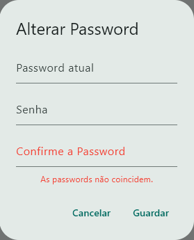
ZCAPs
Uma das principais funcionalidades do sistema é a gestão das Zonas de Concentração e Apoio à População. O sistema foi concebido por forma a poder adaptar-se a uma realidade evolutiva o que significa que os exemplos fornecidos podem divergir da realidade no momento da consulta deste documento.
- Regresso para o menu/ecrã anterior
- Pesquisa - Pesquisa pela designação de uma ZCAP mostrando todos a apenas os resultados da palavra inserida
- Data/Sincronização - Nesta zona encontram-se dois botões:

Data - Permite seleccionar/alterar o mês de trabalho da aplicação. A lista de ZCAPs visível na lista é sempre as que se encontram ativas no mês seleccionado (data inicio anterior ao final do mês e data fim posterior ao inicio). 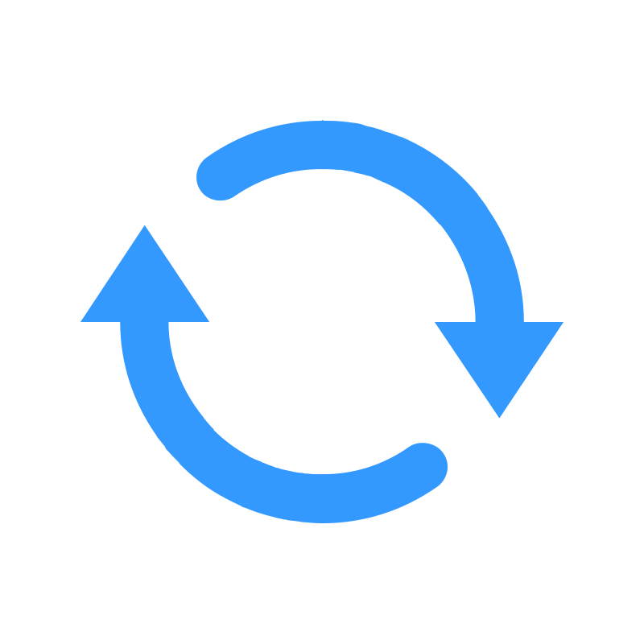
Sincronização - Inicia o processo de envio/receção de dados com a base de dados central. (ver Sincronização) - Novo - Adicionar uma nova ZCAP (ver Novo/Editar ZCAP)
- Árvore Hierarquica - A árvore hierarquica associada às ZCAPs permite associar uma ZCAP a qualquer um dos níveis existentes. O número de níveis e o seu significado depende da configuração de níveis (ver Configuração).
- ZCAP - Cartão resumo dos dados da ZCAP. Disponibiliza também as opções:
| Localização - Mostra no mapa a licalização da ZCAP (requer informação de Latitude e Longitude) | |
| Sincronização Pendente - Representa um registo modificado a aguardar sincronização. (ver Sincronização) | |
| Editar - Editar dados da ZCAP seleccionada. | |
| Eliminar - Elimina o registo seleccionado na base de dados local. Atenção:Registos eliminados localmente mas existentes na base de dados central são repostos após sincronização. Para deixar de ver uma ZCAP listada, usar as datas inicio/fim. |
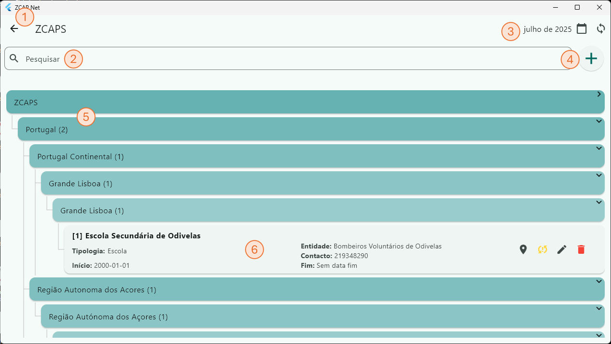
Novo/Editar ZCAP
Criar uma nova ZCAP ou editar uma existente é um processo semelhante. Preencha ou altere os dados do formulário conforme adequado.
- Lista de fixa de campos:
- Nome - Designação da ZCAP.
- Entidade - Entidade responsável pela gestão da ZCAP. Lista de valores editável nas configurações do sistema.
- Tipologia - Tipo de edificio/equipamento. Lista de valores editável nas configurações do sistema.
- Nível da arvore - Nível da árvore onde será posicionada a árvore. Lista de valores editável nas configurações do sistema.
- Árvore - Valor do nível da árvore à qual pertencerá a ZCAP. Lista de valores editável nas configurações do sistema.
- Morada - Morada da ZCAP
- Latitude/Longitude - Coordenadas de georeferenciação da ZCAP no formato graus decimais.
- Data Inicio/Fim - Define o período de validade da ZCAP, a dafa fim não é obrigatória ficando o registo disponível para todas as datas posteriores à data inicio.
As ZCAPS estarão disponíveis para utilização no intervalo de datas seleccionado.
- Abrir detalhes - Abre o formulário de preenchimento dos detalhes da ZCAP. Este formulário contém diferentes Categorias de detalhe e Detalhes, conforme a escolha da Tipologia. A definição da lista de detalhes é editável nas configurações do sistema.
- Cancelar/Guardar/Fechar - Dependendo do perfil de utilizador, as opções disponíveis são:
- Cancelar/Guardar - O utilizador tem permissões para editar e guardar registos.
- Fechar - O utilizador tem apenas permissões de consulta.

Detalhes da ZCAP
- Categoria de detalhe - Os detalhes das ZCAPs estão divididos em categorias para simplificar a sua organização no ecrã e posterior utilização em ferramentas de análise.
- Detalhe - Cada detalhe pode receber um tipo de dados diferente, pode ser de preenchimento obrigatório ou não. Ver configurações.
- Cancelar/Guardar/Fechar - Dependendo do perfil de utilizador, as opções disponíveis são:
- Cancelar/Guardar - O utilizador tem permissões para editar e guardar registos.
- Fechar - O utilizador tem apenas permissões de consulta.
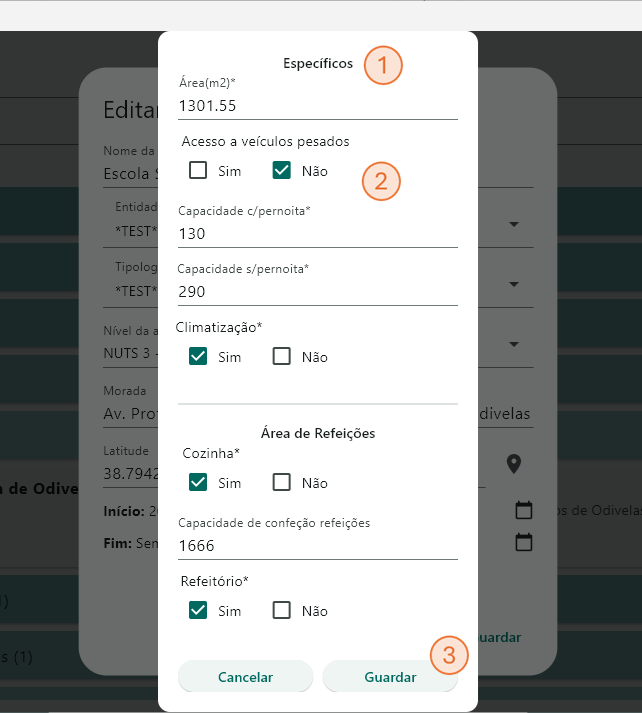
Incidentes
Incidentes
O ecrã de Incidentes é o ecrã onde se desenrola a ação principal do sistema a quando da necessidade de abertura e gestão de uma ZCAP para acolhimento de população.
O processo iniciar-se-á pela criação de um novo incidente para depois se poder associar (abrir) uma ou várias ZCAPs ao incidente e em cada uma das ZCAPs acolher utilizadores.
- Regresso para o menu/ecrã anterior
- Pesquisa - Pesquisa pela designação do tipo de incidente mostrando todos a apenas os resultados da palavra inserida
- Data/Sincronização - Nesta zona encontram-se dois botões:
Data - Permite seleccionar/alterar o mês de trabalho da aplicação. A lista de ZCAPs visível na lista é sempre as que se encontram ativas no mês seleccionado (data inicio anterior ao final do mês e data fim posterior ao inicio). Sincronização - Inicia o processo de envio/receção de dados com a base de dados central. (ver Sincronização) - Novo - Adicionar um novo Incidente (ver Novo/Editar Incidente)
- Árvore Hierarquica - A árvore hierarquica associada aos Incidentes permite associar um incidente em qualquer um dos níveis existentes. O número de níveis e o seu significado depende da configuração de níveis (ver Configuração).
- Incidente - Cartão resumo dos dados do incidente. Disponibiliza também as opções:
- ZCAPs - Lista de ZCAPs já associada ao Incidente
- Adicionar - ZCAPAdicionar uma nova ZCAP ao incidente (ver Adicionar ZCAP)
- Pessoas - Aceder ao menu de gestão de utilizadores da ZCAP
| Sincronização Pendente - Representa um registo modificado a aguardar sincronização. (ver Sincronização) | |
| Editar - Editar dados da ZCAP seleccionada. | |
| Eliminar - Elimina o registo seleccionado na base de dados local. Atenção:Registos eliminados localmente mas existentes na base de dados central são repostos após sincronização. |
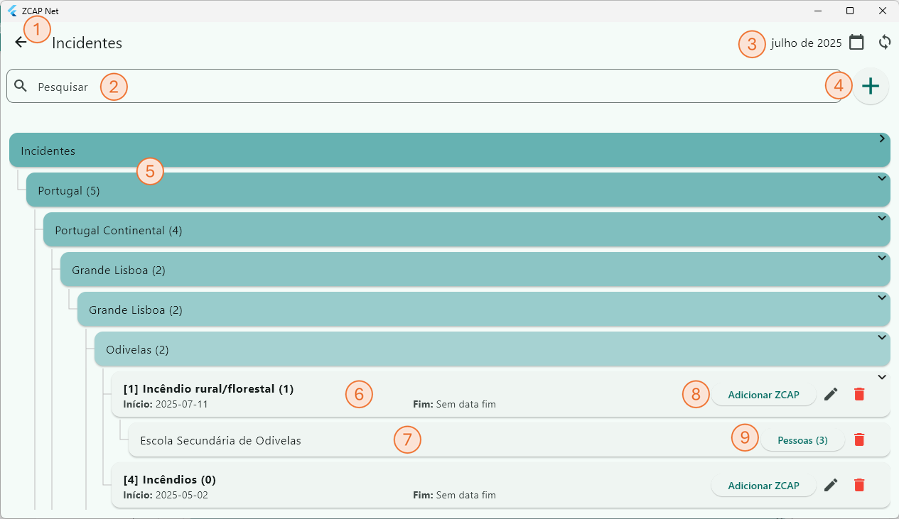
Novo/Editar Incidente
Criar um novo Incidente ou editar uma existente. Preencha ou altere os dados do formulário conforme adequado.
- Seleccionar Nível - Nível da árvore onde será posicionada a árvore. Lista de valores editável nas configurações do sistema.
- Árvore - Valor do nível da árvore à qual pertencerá o Incidente. Lista de valores editável nas configurações do sistema.
- Tipo de Incidente - Seleccione da lista o tipo de incidente a registar.Lista de valores editável nas configurações do sistema.
- Data Inicio/Fim - Define o período da ocorrência do Incidente, a dafa fim não é obrigatória ficando o registo aberto até que seja definido o fim do Incidente.
- Cancelar/Guardar/Fechar - Dependendo do perfil de utilizador, as opções disponíveis são:
- Cancelar/Guardar - O utilizador tem permissões para editar e guardar registos.
- Fechar - O utilizador tem apenas permissões de consulta.
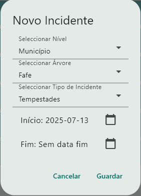
Adicionar ZCAP ao Incidente
- ZCAP - Seleccione da lista a ZCAP pretendia
- Entidade - Indique da lista qual a entidade responsável
- Cancelar/Guardar/Fechar - Dependendo do perfil de utilizador, as opções disponíveis são:
- Cancelar/Guardar - O utilizador tem permissões para editar e guardar registos.
- Fechar - O utilizador tem apenas permissões de consulta.
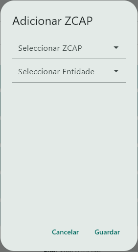
Gestão de utilizadores da ZCAP no Incidente
Ao aceder ao ecrã de Pessoas da ZCAP é apresentada a lista de utilizadores já acolhidos assim como o seu estado. Cada utilizador tem disponível várias opções:
- Regresso para o menu/ecrã anterior
- Pesquisa - Pesquisa por nome mostrando todos a apenas os resultados da palavra inserida
- Sincronização - Inicia o processo de envio/receção de dados com a base de dados central. (ver Sincronização)
- Novo - Adicionar um novo utilizador (ver Adicionar Pessoa)
- Pessoa - Cartão resumo dos dados do utilizador. À esquerda do nome, a cor do icone representa o estado do utilizador na ZCAP.
Verde - ainda se encontra a receber apoio na ZCAP.
Vermelho - já não se encontra a receber apoio na ZCAP (ver Saída).
Disponibiliza também as opções: - Familiares - Adicionar ou alterar relação familiar com outros utilizadores.(ver Familiares)
- Saída - Registar saída do utilizador (ver Saída)
- Apoio Necessário - Gestão das necessidades de apoio do utilizador (ver Apoio Necessario)
- Necessidades Especiais - Gestão das necessidades especiais do utilizador´(ver Necessidades especiais)
| Sincronização Pendente - Representa um registo modificado a aguardar sincronização. (ver Sincronização) | |
| Editar - Editar dados da Pessoa seleccionada. | |
| Eliminar - Elimina o registo seleccionado na base de dados local. Atenção:Registos eliminados localmente mas existentes na base de dados central são repostos após sincronização. |
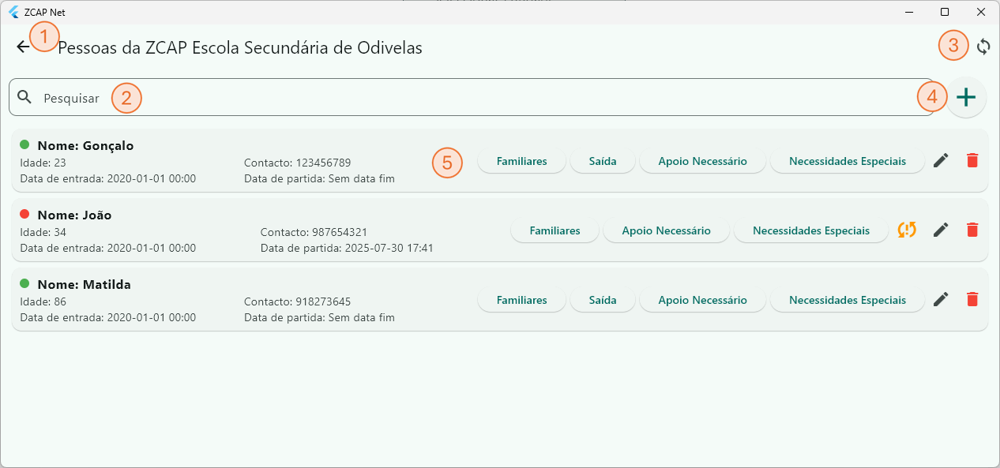
Adicionar Pessoa à ZCAP no Incidente
Adicionar um utilizador à ZCAP. Preencha os campos do formulário:
- Nome - Nome do utilizador
- Idade - Idade do utilizador
- Contacto - Contacto do utilizador
- Nível - Nível da arvore hierarquica do local de residência do utilizador
- Local de residência - Local de residência do utilizador, os valores da lista dependem da escolha do Nível da árvore.
- Data de entrada - Data/hora da entrada do utilizador na ZCAP
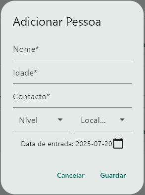
Familiares
É apresentada a lista de parentes já associados ao utilizador. É possível eliminar um registo desde que este não tenha sido ainda sincronizado com a base de dados central.
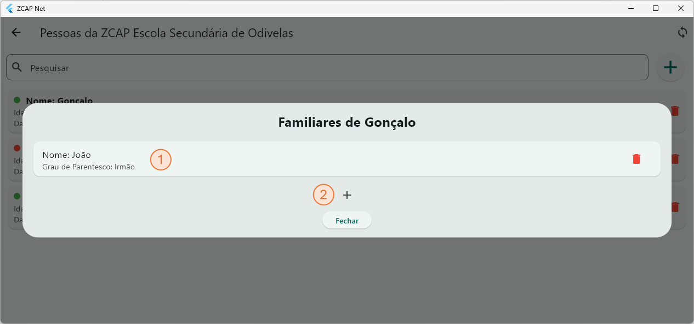
Para adicionar um familiar, este já tem de estar adicionado como utilizador na ZCAP. Seleccione o grau de parentesco do utilizador (ex.: Filha), selecionar a Pessoa (ex.: Matilta) e o grau desta com o utilizador (ex: Pai). No exemplo: Gonçalo é Pai de Matilda que é sua Filha.
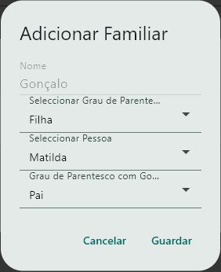
Saída
Quando um utilizador deixa as instalações, de forma definitiva, é necessário registas esta saída e, se possível, conservar informação do seu destino e um contacto em caso de necessidade.
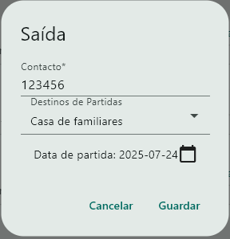
Apoio Necessário
Cada utilizador requer um ou vários tipos de apoio, disponíveis na ZCAP. Este menu lista os tipos de apoio solicitados e disponibilizados ao utilizador.
Adicione ou edite um novo tipo de apoio. É possível também eliminar um registo, desde que não tenha sido já sincronizado com a base de dados central. Se a remoção for por o apoio deixar de ser necessário utilize os campos data inicio/fim do apoio.
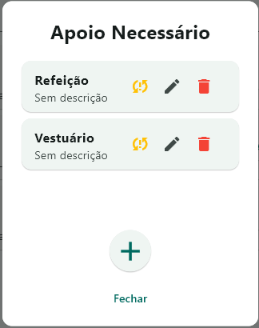
Para adicionar um novo apoio, seleccione da lista o tipo de apoio solicitado. É possível descrever o detalhe do apoio e também o período em que esse apoio é necessário (data inicio/fim). Não estando previsto o final do apoio, deixe sem preencher.
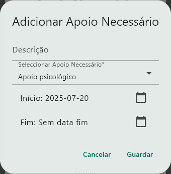
Necessidades Especiais
Um utilizador pode ser portador de uma necessidade especial como por exemplo, ser portador de uma doença ou condição. Este menu lista os tipos de necessidade especial assossiados ao utilizador.
Adicione ou edite um novo tipo de necessidade especial. É possível também eliminar um registo, desde que não tenha sido já sincronizado com a base de dados central. Se a remoção for por deixar de ser necessário utilize os campos data inicio/fim.
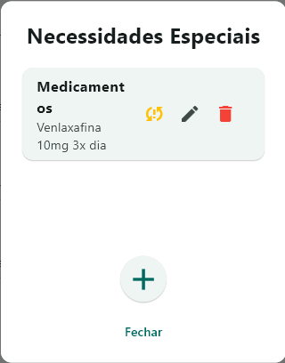
Para adicionar uma nova necessidade especial, seleccione da lista o tipo de necessidade especial. É possível descrever o detalhe da necessidade especial e também o período em que essa necessidade está associada ao utilizador. Não estando previsto o final da necessidade especial, deixe sem preencher.
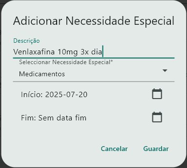
Configurações
É a partir do ecrã de Configurações que se determina o comportamento de toda a aplicação pois é possível definir ou redefinir desde a Estrutura (Árvore Hierarquica e ZCAPs) às opções disponíveis para seleção nos diferentes menus (listas de Tipos de necessidades, tipos de incidentes, graus de parentesco, etc...) assim como os acessos e perfis de utilizador.
Este ecrã está dividido em:
- Estrutura - Também descrita como "Árvore Hierárquica", este menu subdivide-se nas diversas tabelas que constroem a estrutura do sistema (ver Estrutura)
- Incidentes - aqui é possível definir a lista de Tipos de Incidentes (ver Incidentes).
- Utilizadores - Menu onde é possível gerir Utilizadores, Perfis de Utilizador e Acesso a dados (ver Utilizadores).
- Tabelas de suporte - Definição das opções disponíveis para uso em tabelas que limitam os valores a utilizar (ver Tabelas de Suporte).
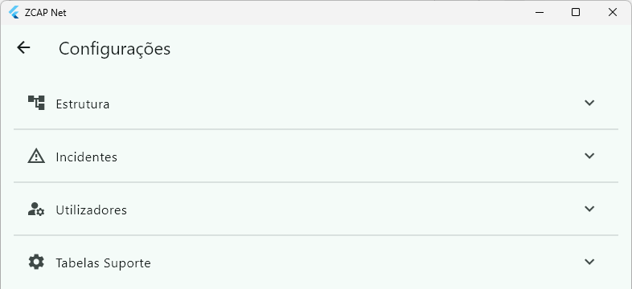
Estrutura
A estrutura da aplicação define a organização da mesma e é composta pelas tabelas:
- Níveis de Arvore - Define quantos e quais os níveis da árvore que podem ser utiizados e o que representam (ver Niveis de Árvore).
- Elementos da Árvore - Registos que constroem a árvore hierarquica e que podem associar ZCAPS, Incidentes e Pessoas (ver Niveis de Árvore)
- Tipos de detalhe - Agrupador de características que podem ser associadas a um registo da árvore (ver Tipos de detalhe).
- Detalhes - Detalhes possíveis para associar a um elemento da árvore (ver Detalhe)
- ZCAPS - Ecrã destinado à gestão das ZCAPS, semelhante ao menu inicial (ver ZCAPs) mas sem a visualização da associação na árvore.
Níveis de Árvore
O ecrã lista todos os níveis de árvore e disponibiliza os icones de adicionar, alterar ou eliminar registo. É também possível despoletar a sincronização nos icones de sincronização.
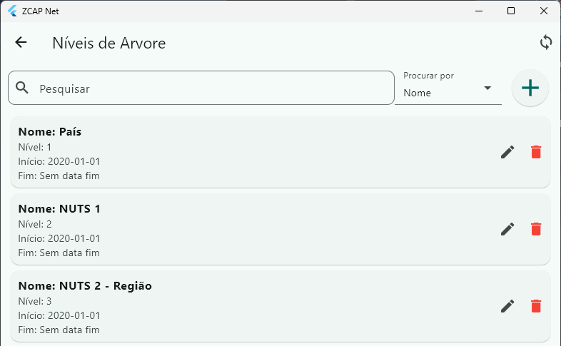
Níveis de Árvore
O ecrã lista todos os elementos da árvore e disponibiliza os icones de adicionar, alterar ou eliminar registo. É também possível despoletar a sincronização nos icones de sincronização.
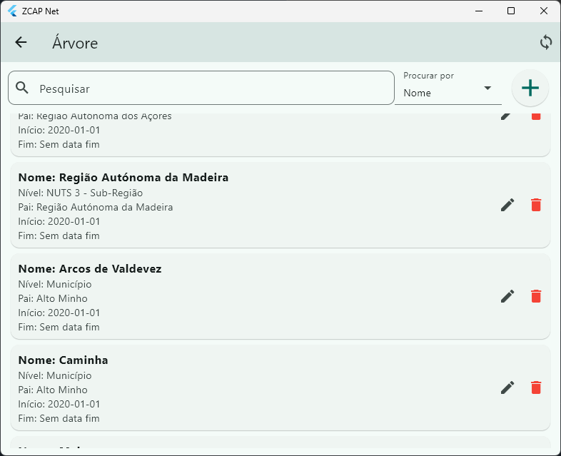
Os elementos da árvore depois de corretamente associados constroem a árvore hierarquica visível e utilizada por todo o sistema para a associação de dados entre Zcaps, Incidentes, Pessoas, Acessos de utilizadores.
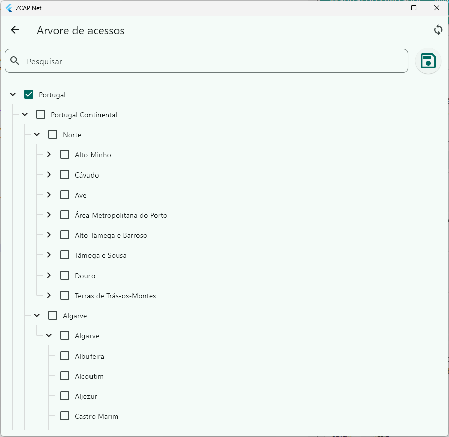
Adicionar um elemento da árvore requer definir o seu Nome, o nível a que pertence e qual o elemento "pai" (se existir). A data incio/fim determina a visibilidade do registo ao longo do tempo.
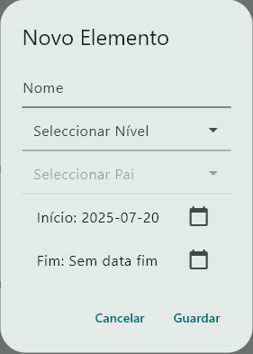
Tipos de detalhe
O ecrã lista todos os Tipos de detalhe e disponibiliza os icones de adicionar, alterar ou eliminar registo. É também possível despoletar a sincronização nos icones de sincronização.
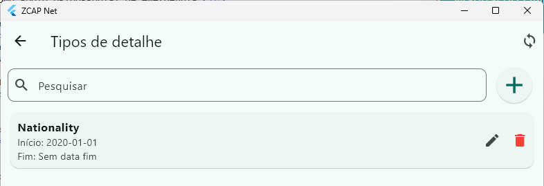
Adicionar um novo tipo de detalhe requer preencher o Nome, o tipo de dados (numero inteiro, numero real, string, boleano, etc...)
Desta forma é possível adicionar novos detalhes aos formulários sem perder o controlo dos dados possíveis de associar.
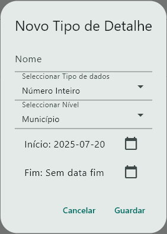
Detalhe
O ecrã lista todos os Detalhes e disponibiliza os icones de adicionar, alterar ou eliminar registo. É também possível despoletar a sincronização nos icones de sincronização.
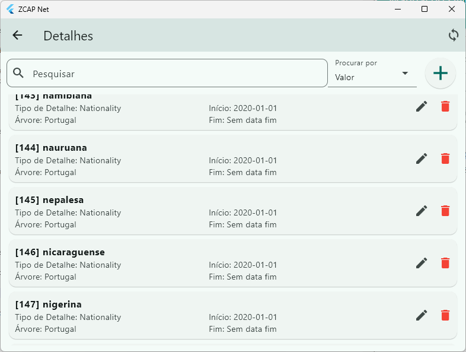
Incidentes
Nesta categoria encontra-se a tabela de Tipos de Incidente.
São listados os Tipos de Incidente passíveis de serem usados na criação de um Incidente e disponibiliza os icones de adicionar, alterar ou eliminar registo. É também possível despoletar a sincronização nos icones de sincronização.
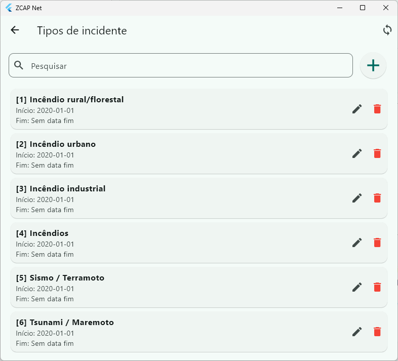
Utilizadores
A categoria de utilizadores é composta por 3 tabelas:
- Utilizadores - Os utilizadores são importantes para distinguir responsabilidaes mantendo a capacidade de colaboração entre os mesmos. Um utilizador é composto pelos campos Nome, Nome de Utilizador e palavra passe e também a atribuição de um Perfil e Acesso a dados.
- Perfil - O perfil de utilizador determina quais as opções de menu o utilizador pode utilizar.
- Acesso a dados - O Acesso a dados determina se o utlizador pode aceder à totalidade da "Estrutura"/"Árvore Hierarquica" ou apenas a parte dela.
Utilizador
O ecrã lista todos os utilizadores e disponibiliza os icones de adicionar, alterar ou eliminar registo. É também possível despoletar a sincronização nos icones de sincronização.
Adicionalmente existe uma opção para repor a palavras-passe do utizador.
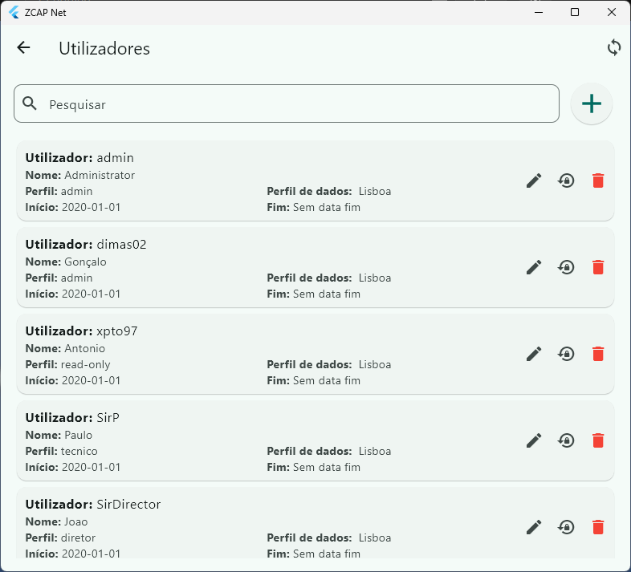
Para adicionar um utilizador seleccione a opção "+" (adicionar) e preencha os campos conforme aplicável.
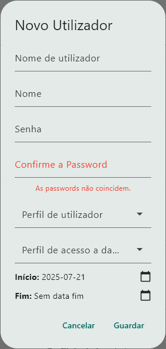
Perfil
O ecrã lista todos os Perfis e disponibiliza os icones de adicionar, alterar ou eliminar registo. É também possível despoletar a sincronização nos icones de sincronização.
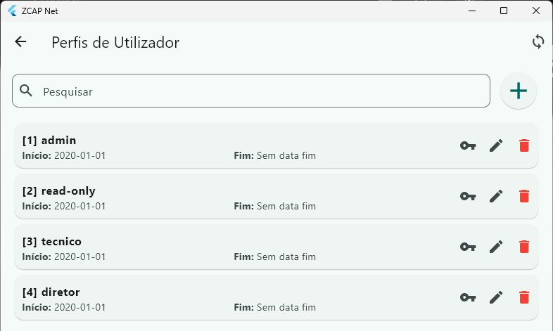
Cada Perfil tem um conjunto de permissões acessíveis no icone do cartão (chave).
Cada Permissão tem associado um nível de acesso que pode ser:
- Leitura/escrita - O utilizador pode aceder ao menu/opção e criar novos registos, alterar ou eliminar informação.
- Leitura - O utilizador não consegue efetuar alterações a registos existentes nem criar ou eliminar registos.
- Sem acesso - O utilizador não tem acesso ao menu/opção.
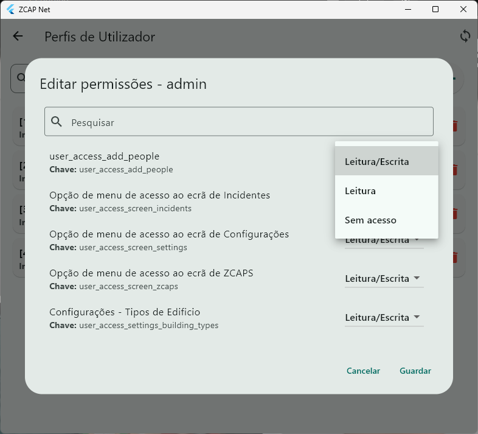
Acesso a dados
O ecrã lista todos os Acesos a Dados e disponibiliza as opções de adicionar, alterar ou eliminar registo. É também possível despoletar a sincronização nos icones de sincronização.
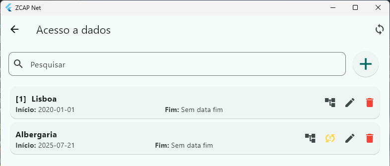
A opção com o icone da estrutura (arvore), permite a edição dos acessos permitidos pelo Acesso a Dados seleccionado.
No exemplo, o utilizador com este perfil irá visualizar apenas os dados associados aos items da árvore seleccionados (Albufeira e Albergaria-a-velha), eventualmente se existirem outros elementos associados ao item "Algarve" que não estejam visíveis por estar filtrado pela descrição, o utilizador tem também acesso aos mesmos.
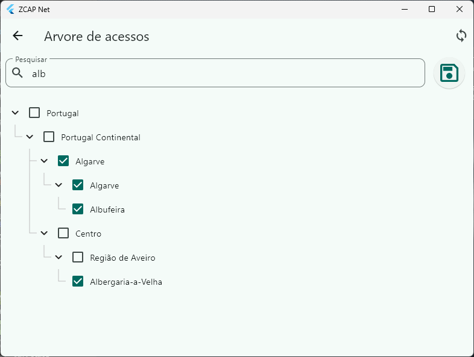
Tabelas de suporte
As Tabelas de suporte são utilizadas para organizar e limitar as opções que o utilizador pode seleccionar nos diversos menus.
Utilizam a mesma estrutura que a tabela "Tipos de Incidente" onde o ecrã lista as opções disponíveis e as opções de adicionar, editar e eliminar registos (ver Tipos de Incidente).
Tabelas de suporte:
- EntidadesTabelas de suporte às Entidades. As entidades são posteriormente utilizadas na abertura de uma ZCAP para determinar a entidade responsável pela gestão da mesma (ver Novo/Editar ZCAP).
- Tipos de entidade - Agrupador de entidades. Utilizado para agregar entidades semelhantes para fins estatísticos (ex.: Serviço Municipal de Proteção Cívil (SMPC), ...)
- Entidades - Entidades que são eventuais gestoras de ZCAPS (ex.: SMPC de Odivelas, SMPC de Loures,...)
- Edificios ZCAP
- Tipos de Edificio - Tipos de edificio que podem ser associados ao criar/editar uma ZCAP (ex. Escola, Tenda, Pavilhão municipal, ...)
- Tipos de Categoria de detalhe - Agrupador de Detalhes de uma ZCAP
- Tipos de Detalhe das ZCAP - Detalhes de uma ZCAP, cada detalhe pertence a uma Categoria de detalhe e tem um tipo de dados associado. Pode ser de caracter obrigatório ou facultativo.
- Pessoas
- Destinos de partida - Lista de destinos possíveis para quando um utilizador abandona a ZCAP.
- Graus de parentesco - Graus de parentesco possíveis de utilizar quando se relacionam dois utilizadores acolhidos numa ZCAP
- Tipos de Necessidade Especial - Um utilizdor pode ser portador de uma necessidade especial. A tabela visa descrever as várias diferentes necessidades possíveis de associar.
- Tipos de apoio - As ZCAPS proporcionam apoio aos utilizadores mas nem sempre o utilizador necessita de todos os apoios por esse motivo, a lista de Tipos de apoio serve para descrever e associar o tipo de apoio que cada utilizador pode receber quando acolhido numa ZCAP.
Sincronização
O serviço de sincronização é definido para ser executado períodicamente de forma automática. Este serviço envia todos os dados novos ou alterados para a base de dados central e recebe atualizações que podem ser novos registos ou atualizações de registos existentes.
Este serviço pode ser despoletado manualmente em qualquer dos ícones de sincronização disponíveis em todos os ecras (canto superior direito) ou no indicador de estado no menu principal (ver Indicador de estado).